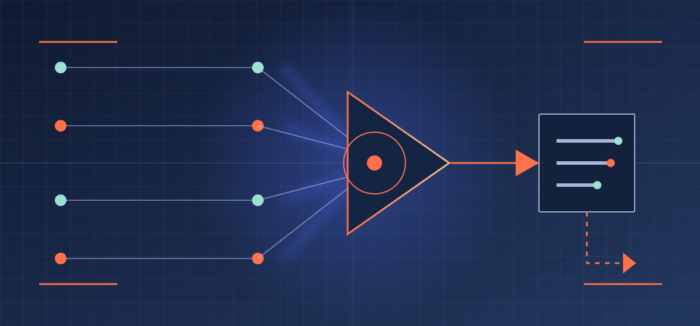

AI MASTERY / ARM EXPERTISE PATHWAY / FOUNDATION 01 OF 05
Autonomy is a
resource decision.
Intelligence becomes operationally meaningful when its power is proportionate to the resources it may touch, the decisions it may make, the record it must leave, and the human who owns the exception.
Map the boundaries
LEARNING POSITIONControl before unbounded action
DECLAREBOUNDOBSERVEESCALATE
00
OPERATING
POSITION
Capability without a boundary is not autonomy.
It is unowned exposure.
The purpose of Autonomous Resource Management is not to make every workflow act alone. It is to make every delegation legible enough that another accountable person can understand what was permitted, what occurred, and what must happen next.
01
DECISION
RIGHTS ATLAS
Four checks before
an action can travel.
Read from left to right. Each stage creates a constraint on the next, so a workflow cannot treat available capability as implied authority.
STAGE01
RESOURCE INVENTORY
What can this workflow consume, alter, disclose, or commit?
List the data, tools, time, funds, people, and downstream dependencies before calling an action “safe.”- Scope the resource
- Name the owner
- Set the limit
STAGE02
DECISION RIGHTS
What may it recommend, execute, approve, or never touch?
Separate analysis from action. A recommendation can travel further than an execution right; an exception requires a named accountable decision.- Recommend
- Execute within limit
- Escalate exception
STAGE03
TRACE RECORD
Could a later reviewer reconstruct the decision without guessing?
Keep the source, instruction, candidate action, authorization, final action, outcome, and unresolved uncertainty together.- Evidence attached
- Decision attributable
- Outcome reviewable
STAGE04
HUMAN ESCALATION
What signal pauses the workflow, and who resolves it?
Predefine the conditions that stop automation: scope breach, uncertainty, conflict, policy exception, or a result that changes another person’s rights.- Monitor the limit
- Hold on breach
- Route accountable decision

02
TRACE
RECORD
A decision is only as reliable
as the record it leaves.
OPERATING RECORD / ARM-03EXAMPLE STRUCTURE
Evidence
What was observed, supplied, or retrieved?
Scope
Which resource, right, and limit applied?
Decision
What was recommended, approved, or executed?
Outcome
What changed, and what remains unresolved?
03
CAPABILITY
RELAY
Expertise is not a title.
It is a handoff.
Researcher
Bounds claims with evidence and names the open question.
Content Developer
Makes approved evidence useful for a specific reader.
Prototype
Tests an uncertainty in the smallest reversible form.
Builder
Implements reviewed work with validation and rollback.
Grower
Connects useful work to a relevant audience openly.
Maintainer
Preserves correctness, continuity, and release discipline.
Sweeper
Removes stale or unsafe material while keeping provenance.
04
PRACTICE
LAB
Run the boundary test
before the system runs.
A facilities workflow wants to reschedule preventive maintenance when sensor data suggests a potential equipment issue. The change may displace production work, consume technician time, and trigger a supplier commitment.
What resources and downstream commitments can this touch?
What can it recommend—and what must a person approve?
Which facts and alternatives belong in the trace record?
Which signals stop the workflow and route an exception?
05
CONTINUE
THE SYSTEM